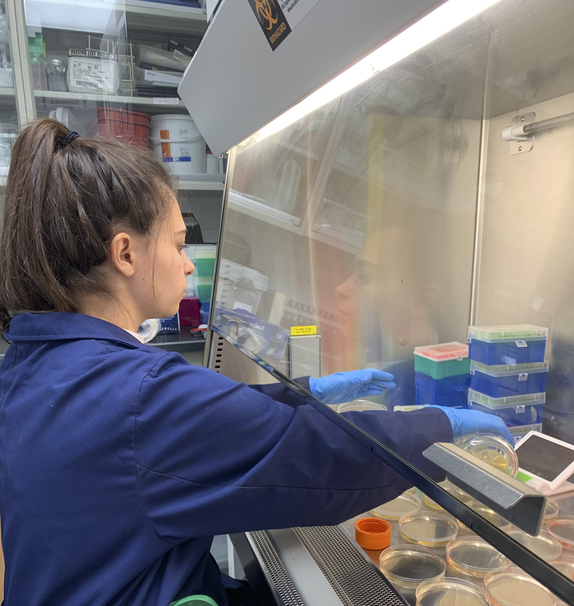
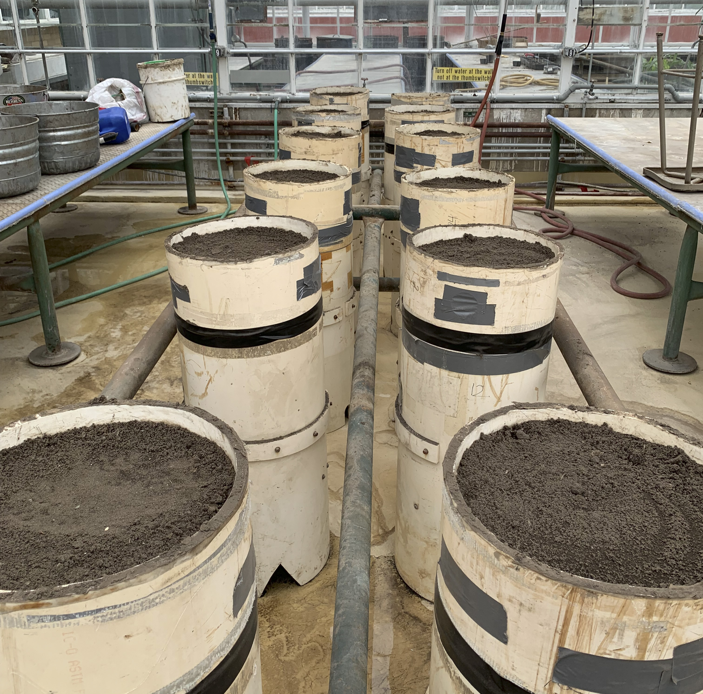
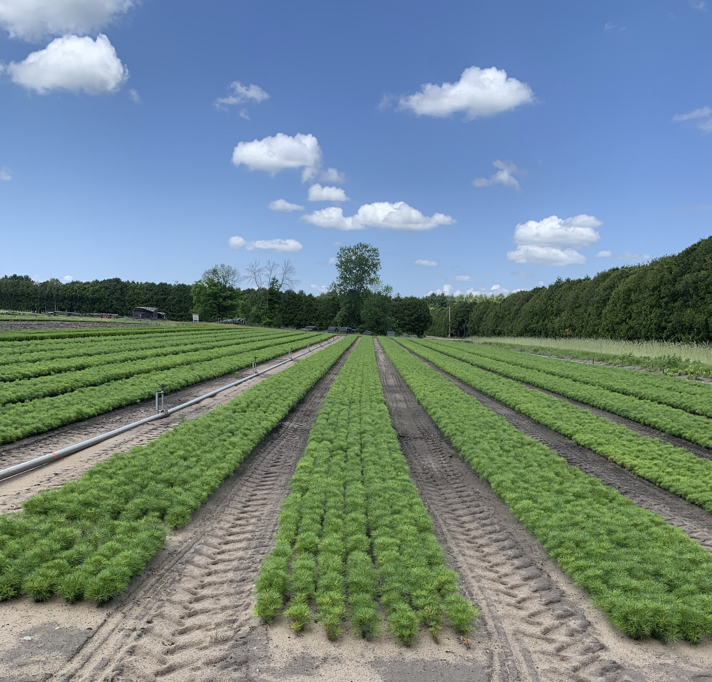

<!-- ================================= -->
<!-- FOREST NURSERY RESEARCH PROJECT -->
<!-- ================================= -->

<main>

  <section class="project-detail forest-project">

    <h1>
      Investigating Damping-Off Disease
      in Red Pine Seedlings
    </h1>

    <p class="project-subtitle">
      Undergraduate Research | 2021–2023
    </p>

    <p>
      <strong>University of Wisconsin–Madison</strong>
      <br>
      Balster Lab | Department of Soil Science
      <br>
      Funded by the Hilldale Undergraduate
      Research Fellowship
    </p>


    <!-- RESEARCH OVERVIEW -->

    <h2>Research Overview</h2>

    <p>
      Supported by the Hilldale Undergraduate
      Research Fellowship, this project
      investigated the influence of soil
      conditions on damping-off disease in
      red pine (<em>Pinus resinosa</em>)
      seedlings at Wilson State Nursery in
      Boscobel, Wisconsin.
    </p>

    <p>
      Operated by the Wisconsin Department
      of Natural Resources, the nursery plays
      an important role in supporting statewide
      reforestation efforts. Damping-off,
      associated with fungal pathogens
      including <em>Fusarium</em> spp.,
      threatens seedling survival and
      nursery productivity.
    </p>

    <p>
      Working with the Balster Lab at
      UW–Madison and collaborators at the
      Wisconsin DNR, I conducted preliminary
      field investigations and a controlled
      greenhouse experiment to evaluate how
      soil pH and volumetric moisture content
      influenced disease incidence.
      The experiment involved four soil
      treatment combinations, fungal
      inoculation, environmental monitoring,
      and measurements of seedling mortality
      and growth.
    </p>


    <!-- KEY FINDINGS -->

    <h2>Key Findings</h2>

    <p>
      Disease incidence differed among the
      four treatment groups. The highest
      observed seedling mortality occurred
      under ambient pH and low soil moisture
      conditions (36.4%), while the lowest
      occurred under reduced pH and high
      soil moisture conditions (10.2%).
    </p>

    <p>
      Statistical comparisons identified
      significant differences in mortality
      proportions for several treatment
      pairs, although average time to
      seedling death did not differ
      significantly. These findings helped
      characterize the relationship between
      soil conditions and damping-off disease,
      providing a foundation for further
      investigation into sustainable
      forest nursery management.
    </p>

    
    <!-- ================================= -->
    <!-- FOREST NURSERY PHOTO GALLERY -->
    <!-- ================================= -->
    
    <div class="forest-photo-gallery">
    
      <figure>
        
        <figcaption>
          Laboratory research and mycology techniques
        </figcaption>
      </figure>
    
      <figure>
        
        <figcaption>
          Controlled greenhouse experiment
        </figcaption>
      </figure>
    
      <figure>
        
        <figcaption>
          Wilson State Nursery, Boscobel, Wisconsin
        </figcaption>
      </figure>
    
    </div>


    <!-- RESEARCH DOCUMENTS -->

    <h2>Research Documents</h2>

    <p>
      Explore the original research proposal
      and the presentation of the completed
      greenhouse experiment.
    </p>

    <div class="research-documents-grid">

      <!-- HILLDALE PROPOSAL -->

      <article class="research-document-card">

        <span class="document-type">
          Research Proposal | 2022
        </span>

        <h3>
          Hilldale Undergraduate
          Research Fellowship Proposal
        </h3>

        <p>
          The original research proposal
          outlining the motivation, background,
          experimental objectives, and planned
          methods for investigating environmental
          conditions associated with damping-off
          disease in red pine seedlings.
        </p>

        <a
          href="images/forest-nursery/Hilldale_Research_Proposal.pdf"
          target="_blank"
          rel="noopener noreferrer"
          class="document-link"
        >
          View Research Proposal (PDF) →
        </a>

      </article>


      <!-- UNDERGRADUATE RESEARCH SYMPOSIUM -->

      <article class="research-document-card">

        <span class="document-type">
          Research Presentation | 2023
        </span>

        <h3>
          Undergraduate Research
          Symposium Presentation
        </h3>

        <p>
          Presentation of the completed
          greenhouse experiment, including
          treatment design, soil monitoring,
          fungal inoculation, seedling growth
          measurements, statistical analyses,
          and findings on damping-off
          incidence across soil conditions.
        </p>

        <a
          href="images/forest-nursery/URS_2023_Presentation.pdf"
          target="_blank"
          rel="noopener noreferrer"
          class="document-link"
        >
          View Research Presentation (PDF) →
        </a>

      </article>

    </div>

  </section>

</main>
